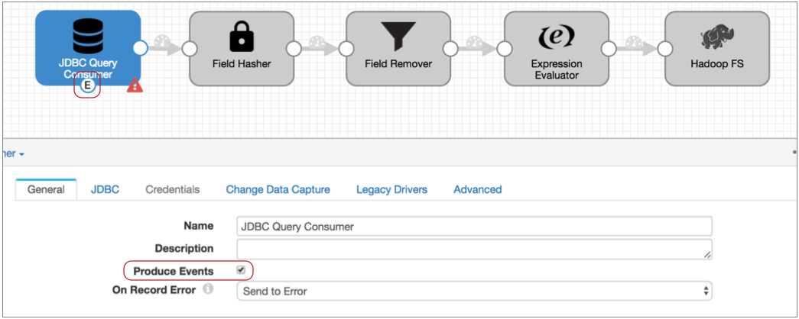
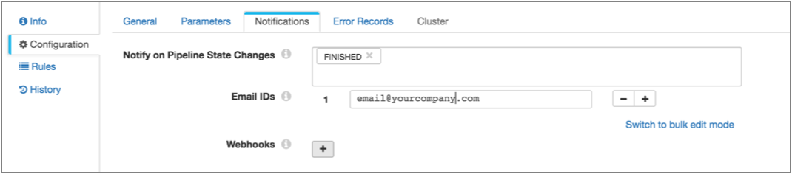

Stopping a Pipeline After Processing All Available Data
This solution describes how to design a pipeline that stops automatically after it finishes processing all available data.
Let's say that your dataflow topology updates a database table daily at 4 am. Rather than have the pipeline process the data in a few minutes and sit idle for the rest of the day, you want to kick off the pipeline, have it process all data and then stop - just like old school batch processing. And you'd like to have the pipeline let you know when it has stopped.
To do this, simply configure the origin to generate events and then route the no-more-data event record to the Pipeline Finisher executor and configure notification.
- Amazon S3 origin
- Azure Data Lake Storage Gen1 origin
- Azure Data Lake Storage Gen2 origin
- Directory origin
- Google Cloud Storage origin
- Hadoop FS Standalone origin
- JDBC Multitable Consumer origin
- JDBC Query Consumer origin
- MongoDB origin
- Salesforce origin
- SAP HANA Query Consumer origin
- SFTP/FTP/FTPS Client origin
- SQL Server 2019 BDC Multitable Consumer origin
- SQL Server CDC Client origin
- SQL Server Change Tracking origin
- Teradata Consumer origin
We'll use the JDBC Query Consumer to show a more complex scenario.
Here's the basic pipeline that reads from a database, performs some processing, and writes to HDFS:

- Configure the origin to generate events:
On the General tab of the JDBC Query Consumer origin, select the Produce Events property.
The event output stream becomes available:

The JDBC Query Consumer generates several types of events: query success, query failure, and no-more-data. We know this because you checked the Event Record section of the JDBC Query Consumer documentation. Every event-generating stage has event details in a similar section.
The query success and failure events can be useful, so you might use a Stream Selector to route those records to a separate event stream. But let's say we don't care about those events, we just want the no-more-data event to pass to the Pipeline Finisher executor.
- Connect the event output stream to the Pipeline Finisher executor.
At this point, all events that the origin generates come to the executor. Since the JDBC Query Consumer origin generates multiple event types, this setup might cause the executor to stop the pipeline too soon.
- To ensure that only the no-more-data event enters the executor, configure a
precondition.
With a precondition, only records that meet the specified condition can enter the stage.
We know that each event record includes the event type in the sdc.event.type record header attribute. So to ensure that only no-more-data events enter the stage, we can use the following expression in the precondition:
${record:eventType() == 'no-more-data'} - Records that don't meet the precondition go to the stage for error handling, so
to avoid storing error records that we don't care about – that is, the query
success and failure events – let's also set the On Record
Error property to Discard.
So here's the Pipeline Finisher:

- Now, to get notified when the Pipeline Finisher stops the pipeline, configure
the pipeline to send an email when the pipeline state changes to Finished.
You can use this option when Data Collector is set up to send email. You can alternatively use the pipeline state notification to send a webhook, or use an Email executor in the pipeline to send a customized email. Since we only need a simple notification, let's send a basic email based on the pipeline state:
- Click in the canvas to view the pipeline configuration, and click the Notifications tab.
- In the Notify on Pipeline State Changes, leave the Finished state and remove the other default states.
- Then, enter the email addresses to receive the email:

With this setup, the JDBC Query Consumer passes a no-more-data event when it completes processing all data returned by the query, and the Pipeline Finisher executor stops the pipeline and transitions the pipeline to a Finished state. All other events generated by the origin are discarded. Data Collector sends notification so you know when the pipeline finishes, and the next time you want to process more data, you can just start the pipeline again.